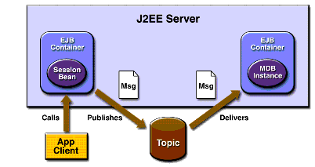

A J2EE Application That Uses the JMS API with a Session Bean
This section explains how to write, compile, package, deploy, and run a J2EE application that uses the JMS API in conjunction with a session bean. The application contains the following components:
The section covers the following topics:
You will find the source files for this section in the directory
<INSTALL>/j2eetutorial14/examples/jms/clientsessionmdb/. Path names in this section are relative to this directory.Writing the Application Components
This application demonstrates how to send messages from an enterprise bean--in this case, a session bean--rather than from an application client, as in the example in Chapter 28. Figure 34-1 illustrates the structure of this application.

Figure 34-1 A J2EE Application: Client to Session Bean to Message-Driven Bean
The Publisher enterprise bean in this example is the enterprise-application equivalent of a wire-service news feed that categorizes news events into six news categories. The message-driven bean could represent a newsroom, where the sports desk, for example, would set up a subscription for all news events pertaining to sports.
The application client in the example obtains a handle to the Publisher enterprise bean's remote home interface, creates an instance of the bean, and then calls the bean's business method. The enterprise bean creates 18 text messages. For each message, it sets a
Stringproperty randomly to one of six values representing the news categories and then publishes the message to a topic. The message-driven bean uses a message selector for the property to limit which of the published messages it receives.Writing the components of the application involves the following:
Coding the Application Client: MyAppClient.java
The application client program,
src/MyAppClient.java, performs no JMS API operations and so is simpler than the client program in Chapter 28. The program obtains a handle to the Publisher enterprise bean's remote home interface, using the JNDI naming contextjava:comp/env. The program then creates an instance of the bean and calls the bean's business method twice.Coding the Publisher Session Bean
The Publisher bean is a stateless session bean that has one
createmethod and one business method. The Publisher bean uses remote interfaces rather than local interfaces because it is accessed from the application client.The remote home interface source file is
src/PublisherHome.java.The remote interface,
src/PublisherRemote.java, declares a single business method,publishNews.The bean class,
src/PublisherBean.java, implements thepublishNewsmethod and its helper methodchooseType. The bean class also implements the required methodsejbCreate,setSessionContext,ejbRemove,ejbActivate, andejbPassivate.The
ejbCreatemethod of the bean class allocates resources--in this case, by looking up theConnectionFactoryand the topic and creating theConnection. The business methodpublishNewscreates aSessionand aMessageProducerand publishes the messages.The
ejbRemovemethod must deallocate the resources that were allocated by theejbCreatemethod. In this case, theejbRemovemethod closes theConnection.Coding the Message-Driven Bean: MessageBean.java
The message-driven bean class,
src/MessageBean.java, is identical to the one in Chapter 28. However, the deployment descriptor will be different, because instead of a queue the bean is using a topic with a durable subscription.Creating and Packaging the Application
This example uses the topic named
jms/Topicand the connection factoryjms/ConnectionFactory,which you created in Creating JMS Administered Objects. It also uses the connection factoryjms/DurableConnectionFactory, which you created in A Message Acknowledgment Example and A Durable Subscription Example. If you deleted any of these objects, create them again.Creating and packaging this application involve six steps:
Compiling the Source Files and Starting the Application Server
Starting deploytool and Creating the Application
- Start
deploytool. For instructions, see Starting the deploytool Utility.- Choose File
New
- Click Browse next to the Application File Name field, and use the file chooser to locate the directory
clientsessionmdb.- In the File Name field, type
ClientSessionMDBApp.- Click New Application.
- Click OK.
Packaging the Session Bean
To package the session bean, perform the following steps:
- Choose File
- In the EJB JAR General Settings screen:
- Select Create New JAR Module in Application and verify that the application is
ClientSessionMDBApp.- In the JAR Display Name field, type
EBJAR.- Click the Edit Contents button.
- In the dialog box, locate the
build/sb/directory. SelectPublisherBean.class,PublisherHome.class, andPublisherRemote.classfrom the Available Files tree. Click Add and then OK.- In the Bean General Settings screen:
- From the Enterprise Bean Class menu, choose
sb.PublisherBean.- Verify that the enterprise bean name is
PublisherBeanand that the enterprise bean type is Stateless Session.- In the Remote Interfaces area, choose
sb.PublisherHomefrom the Remote Home Interface menu, and choosesb.PublisherRemotefrom the Remote Interface menu.After you finish the wizard, perform the following steps:
- Click the
PublisherBeannode, and then click the Msg Dest Ref's tab. In the inspector pane:- Click the
PublisherBeannode, and then click the Resource Ref's tab. In the inspector pane:- Click the
PublisherBeannode, and then click the Transactions tab. In the inspector pane, select the Container-Managed radio button.- Click the
EBJARnode, and then click the Message Destinations tab. In the inspector pane:Packaging the Message-Driven Bean
For greater efficiency, you will package the message-driven bean in the same JAR file as the session bean.
To package the message-driven bean, perform the following steps:
- Choose File
- In the EJB JAR General Settings screen:
- In the Bean General Settings screen:
- In the Message-driven Bean Settings screen:
- For the Messaging Service, accept the default, JMS.
- Choose
javax.jms.Topicfrom the Destination Type combo box.- Choose
PhysicalTopicfrom the Target Message Destination combo box.- Select the Durable Subscription checkbox. In the Subscription Name field, type
MySub.- In the Message Selector field, type the following:
NewsType = 'Sports' OR NewsType = 'Opinion'(If you cannot see the Message Selector field in the screen, expand the screen vertically.)
- In the Connection Factory JNDI Name (Sun-specific) field, type the following:
jms/DurableConnectionFactoryAfter you finish the wizard, perform the following steps:
Packaging the Application Client
To package the application client, perform the following steps:
- Choose File
- In the JAR File Contents screen:
- Verify that Create New AppClient Module in Application is selected and that the application is
ClientSessionMDBApp.- In the AppClient Display Name field, type
MyAppClient.- Click the Edit Contents button.
- In the dialog box, locate the
build/client/directory. SelectMyAppClient.classfrom the Available Files tree. Click Add and then OK.- In the General screen, select
client.MyAppClientfrom the Main Class drop-down list.After you finish the wizard, click the EJB Ref's tab, and then click Add in the inspector pane. In the dialog box, do the following:
- Type
ejb/remote/Publisherin the Coded Name field.- Choose Session from the EJB Type drop-down list.
- Choose Remote from the Interfaces drop-down list.
- Choose
sb.PublisherHomefrom the Home Interface combo box.- Choose
sb.PublisherRemotefrom the Local/Remote Interface combo box.- In the Target EJB area, select JNDI Name and choose
PublisherBeanfrom the combo box.Updating the JNDI Names
You need to update the JNDI name for the message-driven bean so that it specifies the destination it receives messages from.
Verify that the JNDI names for the application components are correct. They should appear as shown in Tables 34-1 and 34-2.
MessageBeanjms/TopicPublisherBeanPublisherBean
Deploying the Application
- Choose File
- Choose Tools
- In the dialog box, type your administrative user name and password (if they are not already filled in).
- In the Application Client Stub Directory area, select the Return Client Jar checkbox. If you wish to run the client in a directory other than the default, click Browse and use the file chooser to specify it.
- Click OK.
- In the Distribute Module dialog box, click Close when the process completes. You will find a file named
ClientSessionMDBAppClient.jarin the specified directory.Running the Application Client
To run the client, use the following command:
The program output in the terminal window looks like this:
Looking up EJB reference Looked up home Narrowed home Got the EJB To view the bean output, check <install_dir>/domains/domain1/logs/server.log.The output from the enterprise beans appears in the server log (
<J2EE_HOME>/domains/domain1/logs/server.log), wrapped in logging information. The Publisher session bean sends two sets of 18 messages numbered 0 through 17. Because of the message selector, the message-driven bean receives only the messages whoseNewsTypeproperty isSportsorOpinion.Suppose that the last few messages from the Publisher session bean look like this:
PUBLISHER: Setting message text to: Item 12: Business PUBLISHER: Setting message text to: Item 13: Opinion PUBLISHER: Setting message text to: Item 14: Living/Arts PUBLISHER: Setting message text to: Item 15: Sports PUBLISHER: Setting message text to: Item 16: Living/Arts PUBLISHER: Setting message text to: Item 17: Living/ArtsBecause of the message selector, the last messages received by the message-driven bean will be the following:
If you like, you can rewrite the message selector to receive different messages.
Undeploy the application after you finish running the client.
All of the material in The J2EE(TM) 1.4 Tutorial is copyright-protected and may not be published in other works without express written permission from Sun Microsystems.